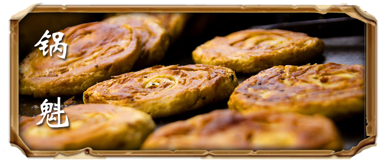
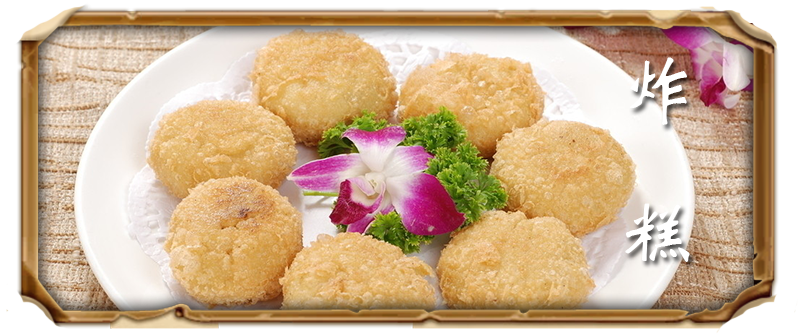
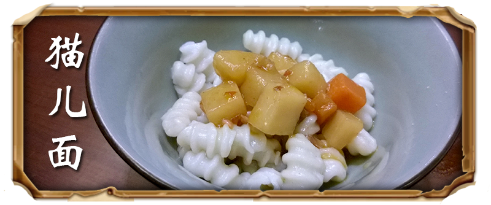
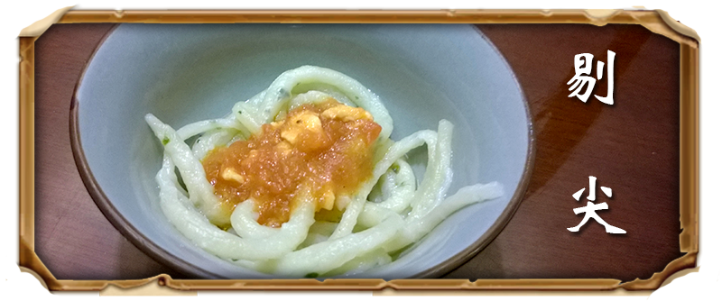

|  |  |
| 锅魁是原平市的传统吃食，原名“锅馈”，是一家面饼铺的学徒偶然创制出来的。
一日店主和师傅出去办事，徒弟便把做月饼剩下的面粉，加了点油酥，包点糖馅，压成鞋底样的饼子放入烤炉。师傅回来，见徒弟咬着个黄澄澄、香喷喷的饼子吃，拿来一尝，酥脆香甜，味道妙极。 |
行家对山西面食作了这样的概括：“晋南的馍、晋中的面、晋北的糕”。
在雁北，盖房要吃上梁糕，乔迁要吃搬家糕，婚嫁要吃锣鼓糕，逢年过节要吃节日糕……雁北炸糕有“素糕”、“毛糕”、“脆炸糕”三种。 |
|  |  |
| 猫儿面，一种面食。也称“麻食”、“麻什”、“麻食子”或者“麻什子”，是西北地区（尤其在陕西）的一道常见居家小吃。 其味道可口，形似猫儿，所以得名。猫儿面煮熟捞出，浇上臊子，臊子的汤汁可以进入猫儿面中的空隙，吃起来风味独特。 | 剔尖又称拨鱼、剔拨股，是流行于晋中一带的传统经典面食，以其方便快捷、口感香滑，利于消化而受到广大百姓的青睐，是山西面食中极具代表性的一种。 一般来说，白面、高粱面（一般要加榆皮面）、杂粮面、红面等都可以用来制作剔尖。白面剔尖，更是中部家庭妇女的拿手好戏，较红面剔尖速度更快，变化更大。 |